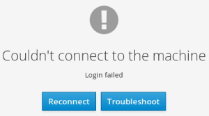
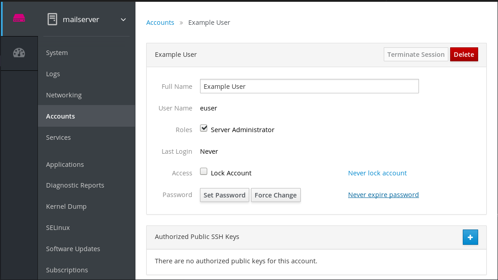
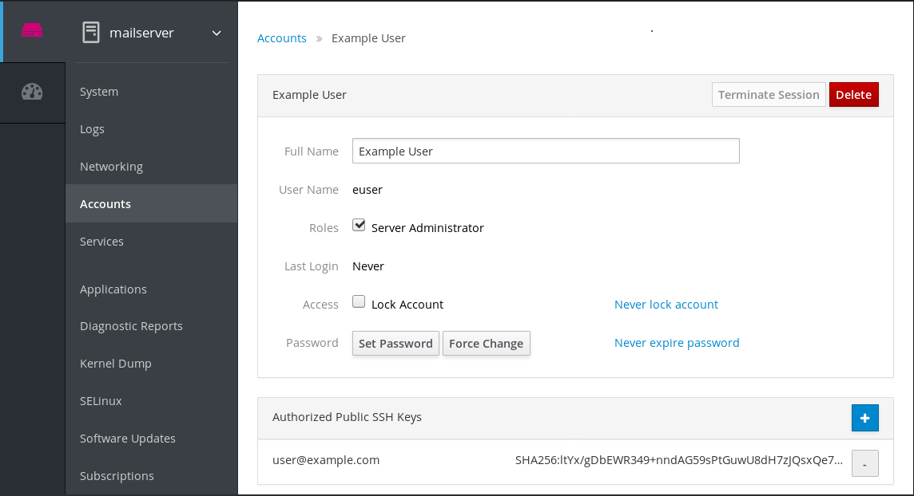
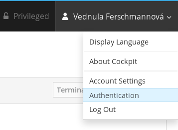
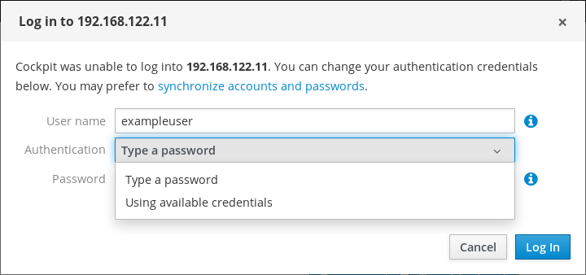

THe RHEL 8 web console can connect to remote systems and manage them through the user-friendly web interface. The following chapter describes:
- The optimal topology of connected systems.
- What is the Dashboard.
- How to add and remove remote systems.
- When, why and how to use SSH keys to for remote system authentication.
Using the RHEL 8 web console to manage remote systems in the network requires considering the topology of connected servers.
For optimal security, Red Hat recommends the following connection setup:
- Use one system with the web console as a bastion host. The bastion host is a system with opened HTTPS port.
- All other systems communicate through SSH.
With the web interface running on the bastion host, you can reach all other systems through the SSH protocol using port 22 in the default configuration.

This section helps you to connect other systems with a user name and password to the Dashboard located in the web console.
The Dashboard is a tool designed for remote server management, where you can add, connect, or remove remote systems.
The Dashboard displays graphs and status for each of the remote systems.
You can add up to 20 remote systems in the Dashboard.

Prerequisites
The
cockpit-dashboardpackage installed in the system where the web interface is running:$ sudo yum install cockpit-dashboard
The
cockpit-dashboardpackage extends the RHEL 8 web console with the remote system management.You need to be logged into the web console with administration privileges.
For details, see Logging in to the web console.
Procedure
- In the RHEL 8 web console, go to Dashboard.
In the Dashboard, click the Add Server icon.

- In the Add Machine to Dashboard dialog box, enter the host name or IP address of the remote system.
- (Optional) Click the Color field to change the color of the system in Dashboard.
- Click Add.
In the Log in to <servername> dialog box, enter the credentials for the remote system.
You can use any user account of the remote system. Howerver, if you use credetials of a user account without administration privileges, you will not be able to perform administration tasks.
If you use the same credentials as for your local system, the web console will authenticate remote systems automatically every time you log in. However, using the same credentials on more machines could be a potential security risk.

- Click Log In.
If the login succeeds the Dashboard adds a new item in the list. To verify the connection, click the system to see all the details in the web console.
Note
The web console does not save passwords used to log in to remote systems which means that you have to log in again after each system restart. To open the login dialog, click the Troubleshoot button placed on the main screen of the disconnected remote system.

This section guides you on removing other systems from a dashboard located in the web console.
Prerequisites
-
The
cockpit-dashboardpackage installed in the system where the web interface is running. Remote systems added.
For details, see Using the web console to add remote systems.
You must be logged into the web console with administrator privileges.
For details, see Logging in to the web console.
Procedure
- Log in to the RHEL 8 web console.
- Click Dashboard.
Click the Edit Server icon.

To remove the server from the Dashboard, click the red Remove icon.

As a result, the server is removed from Dashboard.
The RHEL 8 web console supports authentication with SSH keys. This has the following advantages:
- Increasing security of the communication between servers.
- Avoiding entering credentials repeatedly.
Important
Using SSH keys works only for read only access or for password-less sudo because the authentication happens without a password. To perform administrative tasks, use your system account credentials with administrative privileges.
To configure authentication with SSH keys in the web console:
- Copy the public key into the connected remote system.
- Set the path to the private key in the system, on which the RHEL 8 web console is running.
- Log out from the web console and log in again to ensure the authentication change.
Prerequisites
SSH key stored in the system with running web console. If you do not have any, use the following command:
$ ssh-keygen
- Password to the generated SSH key.
-
The contents of the
~/.ssh/id_rsa.pubfile copied in the clipboard.
Procedure
To copy the public SSH key into a remote system:
- Open the web console.
- Click Dashboard.
- Select the remote system where you want to add the public key.
- In the system settings, go to Accounts.
- Select the user account to which you want to assign the public key.
In the Authorized Public SSH Keys settings, click the + button.

- In the Add public key dialog box, paste the public key you have in the clipboard.
- Click Add key.
At this point, you can see the new public key assigned to the user account.

To set the path to the private SSH key:
- Go to upper right corner settings.
In the drop down menu, select Authentication.

Verify that the web console uses the correct path to the private key you want to use.
By default, the web console uses the following paths for private keys:
~/.ssh/id_rsa ~/.ssh/id_dsa ~/.ssh/id_ed25519 ~/.ssh/id_ecdsa
To use a different key, add the path manually.
Enable the key with the On/Off button.
Enabling the key opens a password dialog.
Enter the SSH key password.

Click Unlock Key.
On Details tab, you can verify the certificate owner and the fingerprint.
- Click Close.
The RHEL 8 web console uses now SSH keys on both sides. However, systems still use the original credentials.
To change the authentication settings:
Log out yourself from the web console.
After the logging back in the web console, red triangle icon appears before the remote system.
Click the system trying to connect to the web console.
You can see two buttons in the screen. Reconnect and Troubleshoot.
Click the Troubleshoot button.
Login dialog appears.

- In the Authentication drop down menu, select Using available credentials.
The web console creates a new connection secured with SSH keys. It works for the web console login as well as for a terminal access.